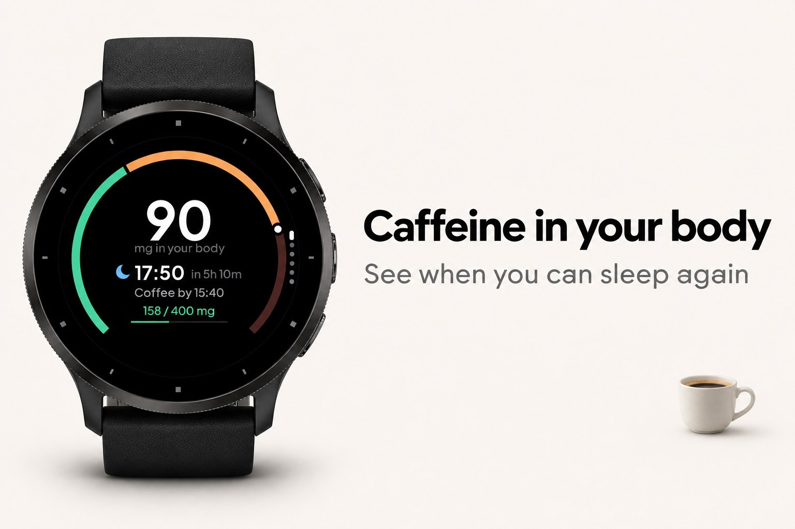
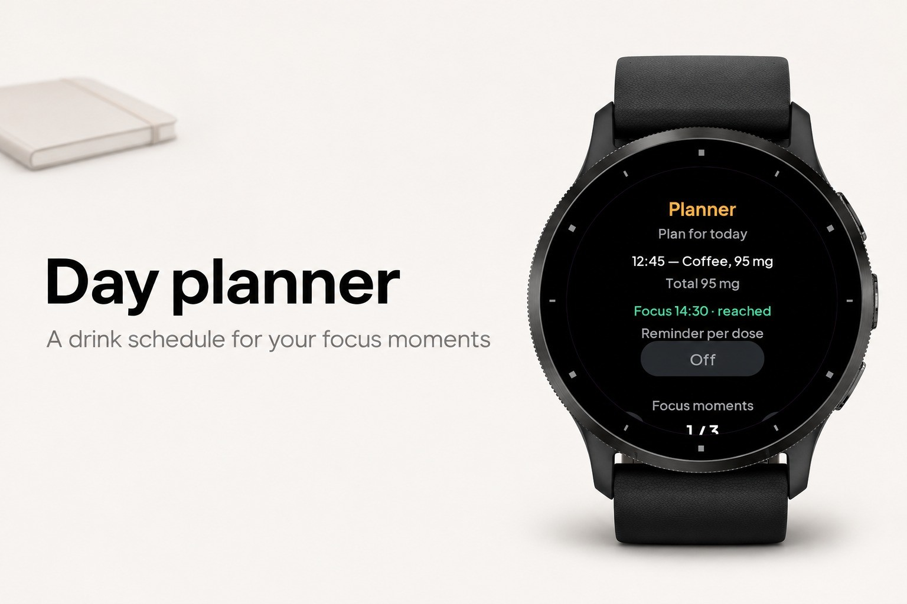
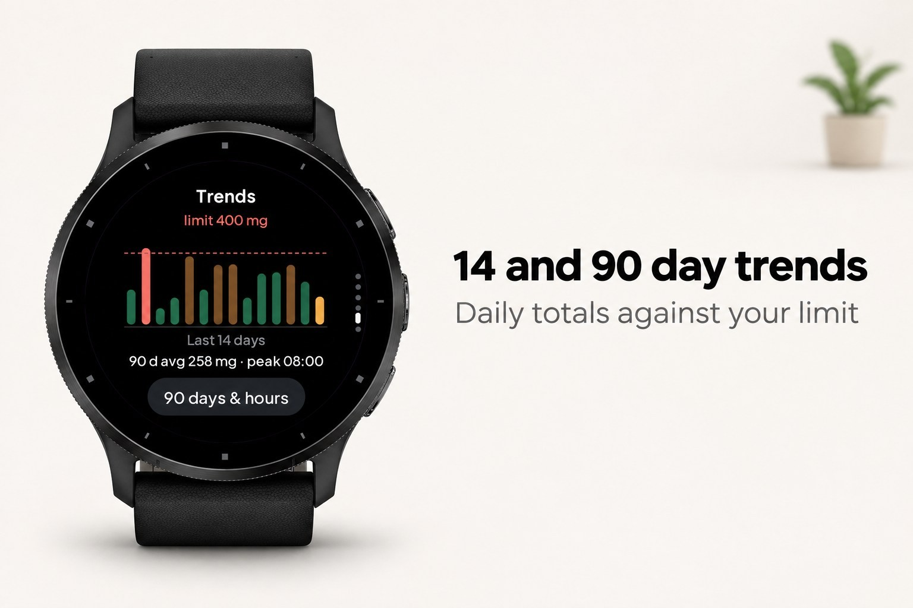
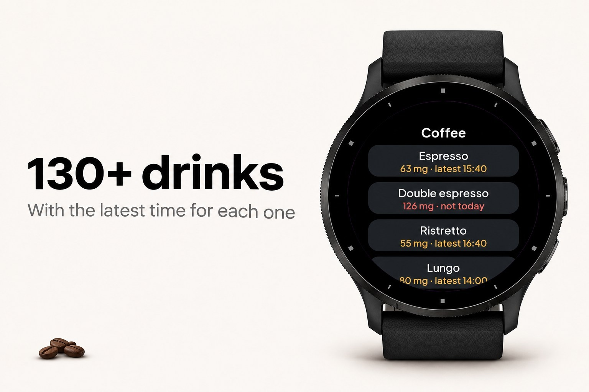
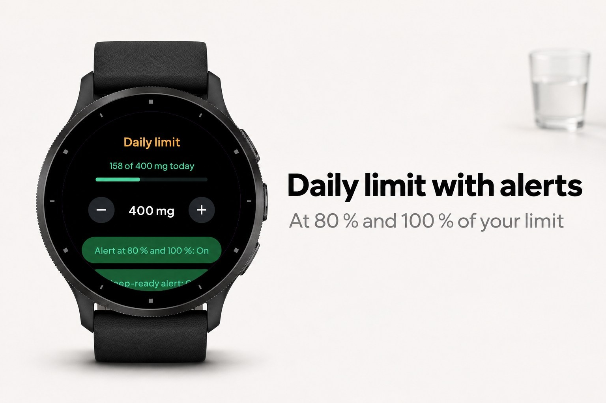

Health & habits · Device app
Caffeine in your body, hour by hour.





Caffi — Know your caffeine, protect your sleep.
Most caffeine apps just count down from your last cup. Caffi models the caffeine actually in your body with a real pharmacokinetic curve — both the absorption (the rise after you drink) and the elimination (the slow decay) — so the peak and the timing are realistic, not guessed.
At a glance you see how much caffeine is in your body right now, when you can sleep again, until what time you can still have a coffee, and whether you are under your daily limit.
On older watches with little memory (fenix 5 and 6, Forerunner 245, 645 and 935, vívoactive 3, Venu Sq, Enduro) the planner, taper plan, half-life test, drinks database and the new look are not available.
Set your body weight, half-life, sleep and stimulation thresholds, daily limit and bedtime. Caffi recalculates your curve right away.
Caffi suggests timings based on a general model. It is not medical advice.